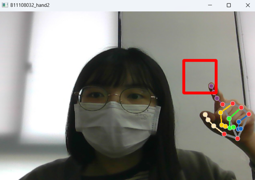

🖐️ 手部偵測展示
從指尖追蹤到完整手勢，三種方法展示手部應用

☝️ 利用手指尖與隨機框互動，訓練電腦追蹤你的手勢位置。

👍 當系統辨識到「比讚」手勢時，會顯示文字並回饋視覺效果。

🤟 藉由 MediaPipe 模型辨識左右手手勢，呈現雙手同步偵測結果。
💻 程式碼展示
▶️ 指尖碰框框遊戲（手指與區域交互）
import cv2
import mediapipe as mp
import random
mpd = mp.solutions.drawing_utils
lm_style = mp.solutions.drawing_styles.get_default_hand_landmarks_style()
conn_style = mp.solutions.drawing_styles.get_default_hand_connections_style()
mphc = mp.solutions.hands.HAND_CONNECTIONS
hands = mp.solutions.hands.Hands(model_complexity=0, max_num_hands=2)
cap = cv2.VideoCapture(0)
run = True
while cap.isOpened():
success, image = cap.read()
img = cv2.resize(image, (640, 420))
w, h = (img.shape[1], img.shape[0])
imgrgb = cv2.cvtColor(img, cv2.COLOR_BGR2RGB)
if run:
run = False
rx = random.randint(10, w - 80)
ry = random.randint(10, h - 80)
print("New box:", rx, ry)
results = hands.process(imgrgb)
if results.multi_hand_landmarks:
for h_landmarks in results.multi_hand_landmarks:
mpd.draw_landmarks(img, h_landmarks, mphc, lm_style, conn_style)
x = h_landmarks.landmark[20].x * w
y = h_landmarks.landmark[20].y * h
if x > rx and x < (rx + 80) and y > ry and y < (ry + 80):
run = True
cv2.rectangle(img, (rx, ry), (rx + 80, ry + 80), (0, 0, 255), 5)
cv2.imshow('B11108032_hand2', cv2.flip(img, 1))
if cv2.waitKey(5) & 0xFF == 27:
break
cap.release()
cv2.destroyAllWindows()▶️ 手勢角度分析（模糊與翻轉處理）
import cv2
import mediapipe as mp
import math
mpd = mp.solutions.drawing_utils
mpd_styles = mp.solutions.drawing_styles
mph = mp.solutions.hands
def vector_2d_angle(v1, v2):
v1_x, v1_y = v1
v2_x, v2_y = v2
try:
angle_ = math.degrees(math.acos((v1_x*v2_x + v1_y*v2_y)/(((v1_x**2+v1_y**2)**0.5)*((v2_x**2+v2_y**2)**0.5))))
except:
angle_ = 180
return angle_
def hand_angle(hand_):
angle_list = []
angle_list.append(vector_2d_angle((hand_[0][0]-hand_[2][0], hand_[0][1]-hand_[2][1]), (hand_[3][0]-hand_[4][0], hand_[3][1]-hand_[4][1])))
angle_list.append(vector_2d_angle((hand_[0][0]-hand_[6][0], hand_[0][1]-hand_[6][1]), (hand_[7][0]-hand_[8][0], hand_[7][1]-hand_[8][1])))
angle_list.append(vector_2d_angle((hand_[0][0]-hand_[10][0], hand_[0][1]-hand_[10][1]), (hand_[11][0]-hand_[12][0], hand_[11][1]-hand_[12][1])))
angle_list.append(vector_2d_angle((hand_[0][0]-hand_[14][0], hand_[0][1]-hand_[14][1]), (hand_[15][0]-hand_[16][0], hand_[15][1]-hand_[16][1])))
angle_list.append(vector_2d_angle((hand_[0][0]-hand_[18][0], hand_[0][1]-hand_[18][1]), (hand_[19][0]-hand_[20][0], hand_[19][1]-hand_[20][1])))
return angle_list
def hand_pos(finger_angle):
f1, f2, f3, f4, f5 = finger_angle
if f1<50 and f2>=50 and f3>=50 and f4>=50 and f5>=50:
return 'good'
elif f1>=50 and f2>=50 and f3<50 and f4>=50 and f5>=50:
return 'no!!!'
elif f1<50 and f2<50 and f3>=50 and f4>=50 and f5<50:
return 'ROCK!'
elif f1>=50 and f2>=50 and f3>=50 and f4>=50 and f5>=50:
return '0'
elif f1>=50 and f2>=50 and f3>=50 and f4>=50 and f5<50:
return 'pinky'
elif f1>=50 and f2<50 and f3>=50 and f4>=50 and f5>=50:
return '1'
elif f1>=50 and f2<50 and f3<50 and f4>=50 and f5>=50:
return '2'
elif f1>=50 and f2>=50 and f3<50 and f4<50 and f5<50:
return 'ok'
elif f1<50 and f2>=50 and f3<50 and f4<50 and f5<50:
return 'ok'
elif f1>=50 and f2<50 and f3<50 and f4<50 and f5>50:
return '3'
elif f1>=50 and f2<50 and f3<50 and f4<50 and f5<50:
return '4'
elif f1<50 and f2<50 and f3<50 and f4<50 and f5<50:
return '5'
elif f1<50 and f2>=50 and f3>=50 and f4>=50 and f5<50:
return '6'
elif f1<50 and f2<50 and f3>=50 and f4>=50 and f5>=50:
return '7'
elif f1<50 and f2<50 and f3<50 and f4>=50 and f5>=50:
return '8'
elif f1<50 and f2<50 and f3<50 and f4<50 and f5>=50:
return '9'
else:
return ''
cap = cv2.VideoCapture(0)
hands = mph.Hands(model_complexity=0, max_num_hands=2)
w, h = 540, 310
while cap.isOpened():
success, image = cap.read()
img = cv2.resize(image, (w, h))
img2 = cv2.cvtColor(img, cv2.COLOR_BGR2RGB)
results = hands.process(img2)
if results.multi_hand_landmarks:
for h_landmarks in results.multi_hand_landmarks:
finger_points = [(i.x*w, i.y*h) for i in h_landmarks.landmark]
if finger_points:
finger_angle = hand_angle(finger_points)
text = hand_pos(finger_angle)
if text == 'no!!!':
img = cv2.GaussianBlur(img, (55, 55), 0)
img = cv2.flip(img, 0)
cv2.putText(img, text, (30,120), 1, 5, (0,0,255), 10, 1)
cv2.imshow('B11108032_gesture1', img)
if cv2.waitKey(5) & 0xFF == 27:
break
cap.release()
cv2.destroyAllWindows()▶️ 手勢分類模型辨識（MediaPipe GestureRecognizer）
import cv2
import mediapipe as mp
from mediapipe.tasks import python
from mediapipe.tasks.python import vision
base_options = python.BaseOptions(model_asset_path='models/gesture_recognizer.task')
options = vision.GestureRecognizerOptions(num_hands=2, base_options=base_options)
recognizer = vision.GestureRecognizer.create_from_options(options)
cap = cv2.VideoCapture(0)
while cap.isOpened():
success, image = cap.read()
imgrgb = cv2.cvtColor(image, cv2.COLOR_BGR2RGB)
image_mp = mp.Image(image_format=mp.ImageFormat.SRGB, data=imgrgb)
recognition_result = recognizer.recognize(image_mp)
for j, handLR in enumerate(recognition_result.handedness):
if len(handLR) > 0:
top_handLR = handLR[0]
LR = top_handLR.display_name
cv2.putText(image, LR, (5, 50 + 40 * j), 2, 1, (255, 0, 255), 2)
for i, gesture in enumerate(recognition_result.gestures):
if len(gesture) > 0:
top_gesture = gesture[0]
gesture_name = top_gesture.category_name
score = top_gesture.score
cv2.putText(image, f'Hand #{i + 1}: {gesture_name} ({score:.2f})', (100, 50 + 40 * i), 2, 1, (0, 255, 255), 2)
cv2.imshow('B11108032_gesture2', image)
if cv2.waitKey(5) & 0xFF == 27:
break
cap.release()
cv2.destroyAllWindows()